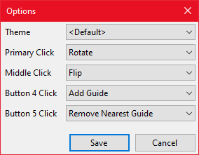

Configuration
You can access the configuration by right clicking the ruler and selecting Options. This will then display the Options window where you can change the configuration.

Figure 4: The options window.
Options
Theme
Allows you to change the theme of the ruler.